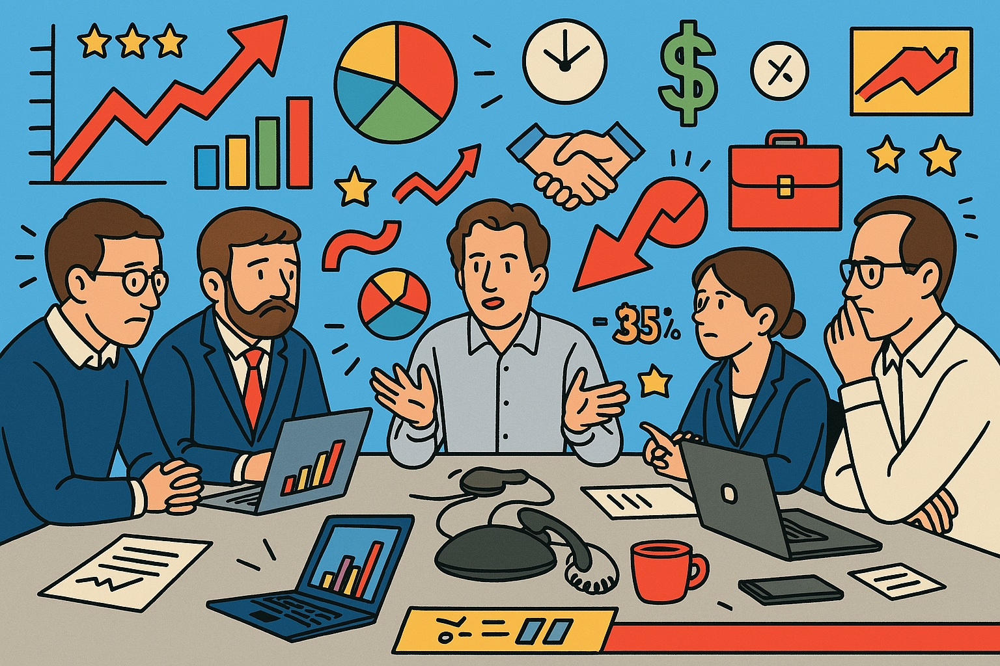

Slide Final
A call terminou, mas a ansiedade continua.
Inspirado no expressionismo dramático.
Inspirado no expressionismo dramático.

Blackout na Sala 5
Ninguém confia em ninguém. Mas todos compartilham o mesmo link do Excel.
Inspirado no cinema noir.
Inspirado no cinema noir.

Pivotar é Preciso
O futuro é neon, o KPI é incerto, o prazo era ontem.
Inspirado no futurismo retrô (synthwave).
Inspirado no futurismo retrô (synthwave).

Sagrada Reunião
Luz divina sobre PowerPoint. E uma planilha esperando por redenção.
Inspirado no barroco (Caravaggio).
Inspirado no barroco (Caravaggio).
Sonhos de Q3
Tudo é colorido. Só o resultado que não.
Inspirado na arte naïf.
Inspirado na arte naïf.
Game Over, KPI
Os gráficos estão em 8-bit. O desespero é em tempo real.
Inspirado em pixel art anos 90.
Inspirado em pixel art anos 90.
Tudo Bem na Reunião
O fundo é rosa, os olhos estão vazios, e a call é às 22h.
Inspirado em cartoon pastel.
Inspirado em cartoon pastel.
PowerPoint é Pop
Drama glamouroso com lágrima vetorial.
Inspirado na pop art publicitária.
Inspirado na pop art publicitária.

Plano Quinquenal de Sobrevivência
Se o líder aponta para cima, o gráfico não pode cair.
Inspirado em pôster soviético.
Inspirado em pôster soviético.
Burnout com Glitter
Corações colados, caos decorado.
Inspirado em scrapbook dos anos 2000.
Inspirado em scrapbook dos anos 2000.

Reunião com Olhar para a Câmera
Alguém engasgou com a planilha. Outro sorriu pra câmera invisível.
Inspirado em sitcom estilo The Office.
Inspirado em sitcom estilo The Office.

Painel de Emoções Corporativas
O gráfico foge da página. A caixa de texto grita.
Inspirado em infográfico maluco.
Inspirado em infográfico maluco.

O Estagiário Sabia
Um quadro sombrio para um quadro de metas.
Inspirado em livro infantil macabro.
Inspirado em livro infantil macabro.

Sob Pressão, com Excel
A tensão é real. O PowerPoint também.
Inspirado em pôster de reality show corporativo.
Inspirado em pôster de reality show corporativo.